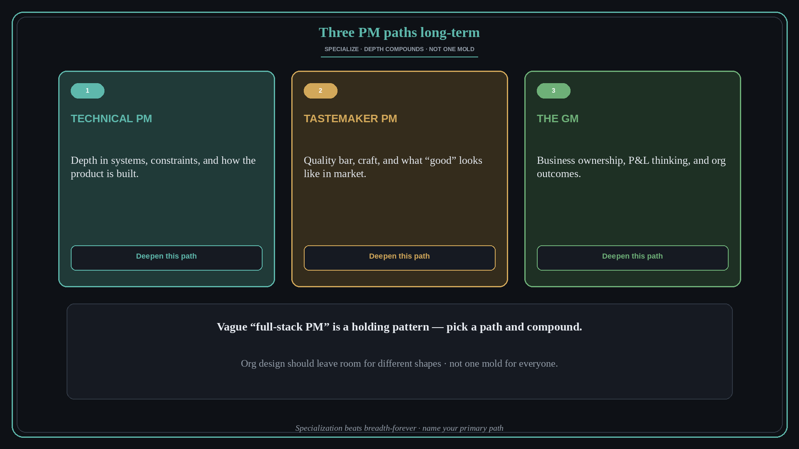

Three PM paths long-term: technical, tastemaker, GM
Source: Geoff Charles (@geoffintech) via Lenny Rachitsky (@lennysan)
original post
What it claims
The CPO of Ramp sees three durable paths for product managers: (1) the technical PM, (2) the tastemaker PM, and (3) the GM. Vague “full-stack PM” is not a path — it is a holding pattern. Specialization compounds; trying to be all three forever dilutes the craft you could deepen.
Why it matters for a PO
As a PO you will be pulled toward backlog breadth and “generalist” status. That feels safe and stalls growth. Pick a primary path — tech depth, taste/quality bar, or business/GM ownership — and deepen it on purpose. Org design should not force every PO into one mold.
3 takeaways
- Name your primary path: technical, tastemaker, or GM — then invest weekly hours there.
- Specialization beats vague full-stack; breadth is useful early, depth is the long game.
- When you design teams, leave room for different PO shapes — one mold wastes talent.
Practice this week
Write one sentence naming your primary path for the next 12 months and one concrete skill you will deepen this quarter. Share it with your manager or a peer so it is not a private wish.